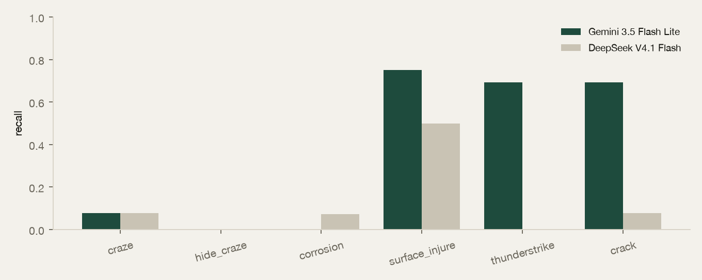

Industry study · Renewable energy O&M · November 2026
Blade Inspection Copilot
Drone photos of wind turbine blades, triaged by a multimodal model that names the defect, grades severity, and drafts the technician note. Measured on 75 real inspection images from a public drone dataset, with Gemini 3.5 Flash Lite against DeepSeek V4.1 Flash.
The business problem
Blade inspection is a documentation bottleneck, not a photography problem. A drone captures hundreds of images per turbine, and an engineer still writes a finding for each one: defect type, severity, location, and an action. The taxonomy is fixed across the fleet, so inconsistent wording and slow write-ups cost real hours and make trend analysis unreliable.
The copilot does not replace the engineer. It produces a first-pass finding per image in about two seconds, in one taxonomy, and a human approves or corrects it.
Results
| model | images | exact set match | class-set F1 | critical recall | cost / 1,000 | p50 | p95 |
|---|---|---|---|---|---|---|---|
| Gemini 3.5 Flash Lite | 75 | 21.3% | 0.360 | 69.2% | $0.46 | 1.96s | 37.2s |
| DeepSeek V4.1 Flash | 75 | 9.3% | 0.169 | 7.7% | $0.40 | 6.59s | 46.5s |
Critical recall counts crack and thunderstrike together: the two classes where a miss has a maintenance consequence. Exact set match requires the model to name exactly the annotated class set.


What the numbers mean
- Gemini is usable as a drafting copilot, not as a gate. It catches about seven in ten critical defects and names the right class set for one image in five. That is enough to draft a finding for an engineer to approve, not enough to clear an image without review.
- DeepSeek is not viable for this task at similar cost. Class-set F1 0.17 and critical recall 8 percent. Its image path is cheap but the visual grounding is far behind Gemini on fine surface defects.
- Cost is not the differentiator. Both land near $0.40 to $0.46 per 1,000 images, which is trivial next to the labor it is meant to save. Model choice is a quality decision.
Video sweep
Gemini 3.5 Flash Lite accepts video directly, so the same workflow runs on a short drone sweep. An eight-second clip built from eight inspection frames, one frame per second, produced a per-second condition log: 3 of 5 critical frames flagged, exact class set on 12.5% of frames, 689 prompt tokens.
| second | annotated | copilot |
|---|---|---|
| 0 | crack | surface_injure |
| 1 | crack | surface_injure |
| 2 | surface_injure, thunderstrike | thunderstrike |
| 3 | thunderstrike | thunderstrike |
| 4 | surface_injure, thunderstrike | thunderstrike |
| 5 | hide_craze, surface_injure | surface_injure |
| 6 | corrosion | craze, surface_injure |
| 7 | corrosion | hide_craze |
Eight frames is a demonstration, not a benchmark. It shows the video path works and that the model tracks defects across a sweep.
Business case
The model numbers above are measured. The labor numbers below are inputs you can change.
Model cost uses the measured $0.46 per 1,000 images. Review time assumes the engineer checks the draft rather than writing from scratch.
What is strong, what is weak
Strong. Real drone imagery (CC BY 4.0), a fixed taxonomy, two model families measured on the same images, cost and latency per 1,000, a working video path, and a business case whose inputs are visible.
Weak. No healthy images in the source dataset, so specificity and false-clear rate cannot be reported. The dataset is annotated by one source, and craze versus hide_craze is a genuinely ambiguous boundary. 75 images and one seed, so the intervals are wide. p95 includes gateway retries. The copilot drafts; it does not clear.
Reproduce
uv run python scripts/run_eval.py --model both --per-class 13 uv run python scripts/build_video.py uv run python scripts/report.py
Data: Wind Turbine Blade Defect dataset, DOI 10.6084/m9.figshare.30210175, CC BY 4.0.